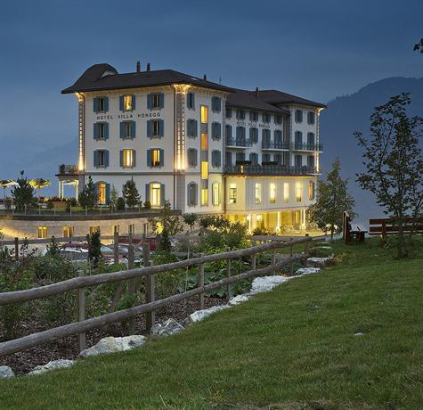

 The Honegg shines in new splendour at a prime panoramic location high above Lake Lucerne: the 1905 building was converted into a 5-star superior hotel with 23 rooms and suites in 2011 and can also be rented as a whole for company events and family celebrations. These include private cinema, fireplace room, lounge, sun terrace, conference rooms, fitness, wellness, heated outdoor pool, mountain bikes and nearby golf course. Situated above Ennetbürgen at 914 metres above sea level, the Hotel Villa Honegg is just 20 minutes from Lucerne. The long-established hotel was built in 1905 and reopened for business in May 2011 following a major refit. It offers space and privacy for corporate enterprises and organisations, as well as private individuals. Unique for an establishment of its size, the hotel can be booked en bloc for exclusive use by a single group of guests. Alongside 23 guest rooms and suites, the hotels offers the following: Restaurant with private terrace, Conference room seating 22, Fireside Lounge, Spa area with indoor pool and outdoor infinity-edge basin, sauna, steam bath, gym, massage and cosmetic treatments, cinema, private function/event and seminar room.
Switzerland Page